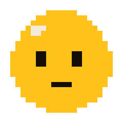
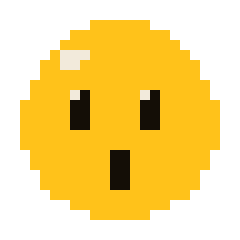
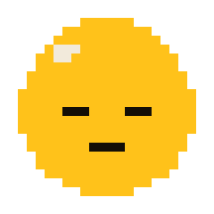

--:--

tap YOLK to talk
meditate

sit with YOLK
pick a length. YOLK breathes with you. a bell starts and ends it.
sound: silence
halfway bell: off
never mind

keep going
end session
eye: off
YOLK's brain (the mac) isn't answering. is it awake?